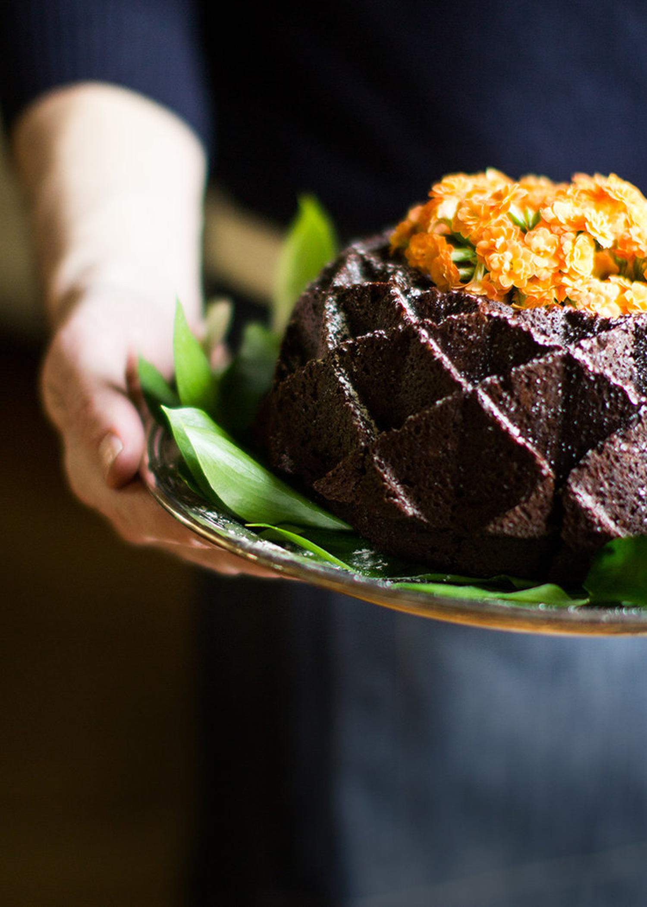

Chocolate Bundt Cake
Does one really need a reason to make cake? Well, Easter is upon us and I love a chocolate cake. I especially love the look of bundt cakes. There are so many options and they make for such beautiful presentation. I used the Nordic Ware Jubilee Bundt Pan , but there are so many others to choose from. This recipe is amazing with the chocolate icing but I opted to simply dust with powdered sugar and top it with a lovely, floral crown. This is a moist but dense cake, almost like a pound cake and perfect for Easter or you know, just because!
Bundt cakes originally were created as an elevated way of presenting a traditional cake. If you want to geek out on it's history, here's a link to the bundt cake's origins.
You will need:
|
|
- Pre-heat oven to 350F degrees.
- For cake, place the coffee, butter and cocoa in a medium sauce pan, heating and stirring until butter melts.
- When butter has melted, remove from heat and whisk until smooth. Let cool for 10 minutes.
- While chocolate cools, put the sugar, baking powder, baking soda, salt and flour in to a large mixing bowl, whisking to combine.
- Pour the cooled chocolate in with the dry ingredients, mixing until fully combined.
- In a separate, small bowl, combine vanilla extract, eggs and sour cream, whisking until combined and smooth.
- Add to chocolate batter, mixing until fully combine. (I used a whisk and gave the ole wrist a workout!)
- Thoroughly grease a non-stick bundt pan (I used baking spray), and pour batter into pan.
- Bake 50-55 minutes until a long skewer inserted into the center comes out clean.
- Remove from oven and let cool for 5 minutes before turning pan over onto a cooling rack. After 5 more minutes, remove the pan from the cake.
- Dust with powdered sugar - OR - if you opt to do icing, let cake completely cool, first.